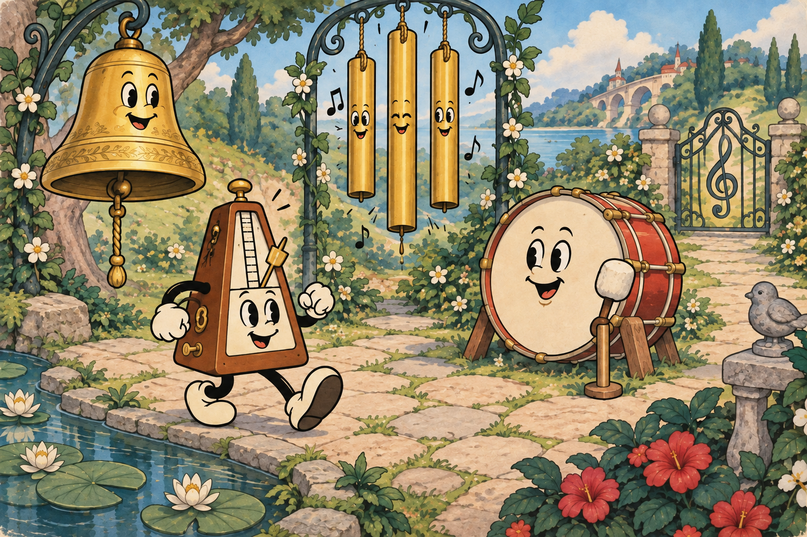

声音也有名字
音名与唱名
基本音名使用七个字母：
CDEFGAB
唱名是用来唱读的音节，例如：
Do Re Mi …
静态画稿 · 场景对象为美术占位
01 / 知识介绍展开
浅色平面区域承载真正的概念解释，右侧继续保留场景。两组文字分开呈现，不用对齐连线暗示 C 与 Do 的对应关系；此处尚未选定固定唱名或首调唱名体系。
用一个例子连起来
这是音名 C
示范播放时，C 标记与声音同时亮起。
字母标记的是音名，
不是乐器的名字。
声音示例
C
声音与标记
一起出现
一起出现
高亮状态示意 · 本稿无声音
02 / 对照示范
讲解缩短，独立的声音示例成为焦点。标记不贴在鼓或铃上，避免把音名当作某种乐器的身份。这里仅说明音视同步的呈现方式，波纹是示意图，不代表真实声波；音源与音区留待内容制作。
引导练习
找到标记为 C 的材料
先看字母，再选择对应的声音材料。
声音材料
提示仍然可见，可以随时回看。
选中状态示意 · 尚未判定或通关
03 / 引导练习
知识区收起为短提示，画面留给材料与场景。白色外圈和“已选中”文字共同表达状态。此例只检查材料操作入口是否看得懂，不等同于听觉识别训练、独立挑战或完整机关玩法。